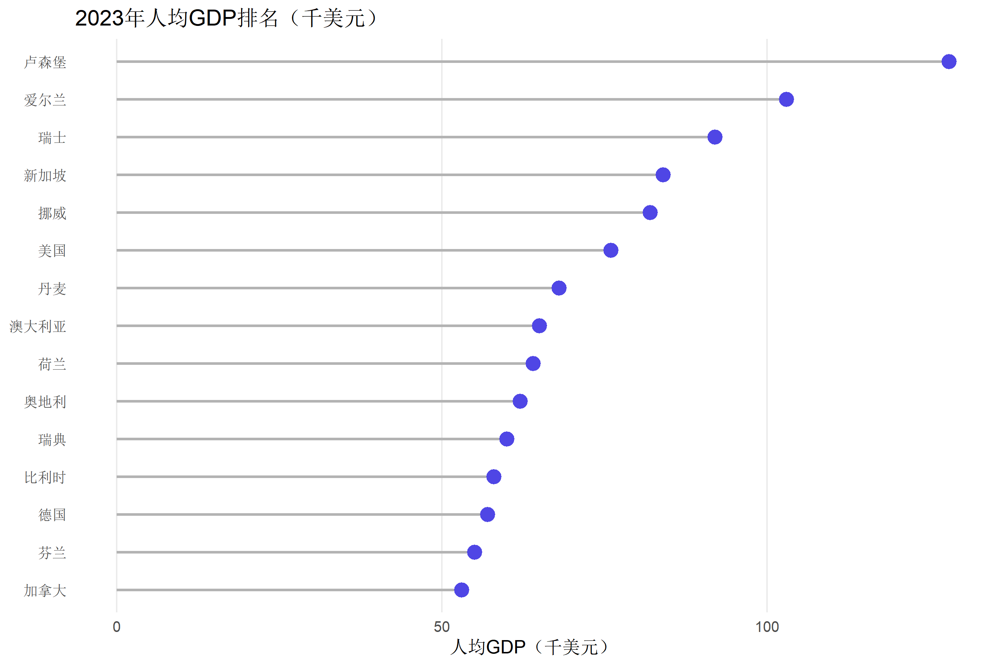
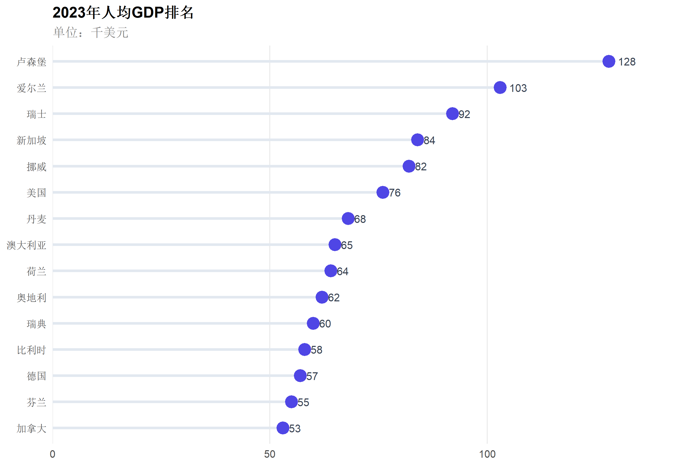
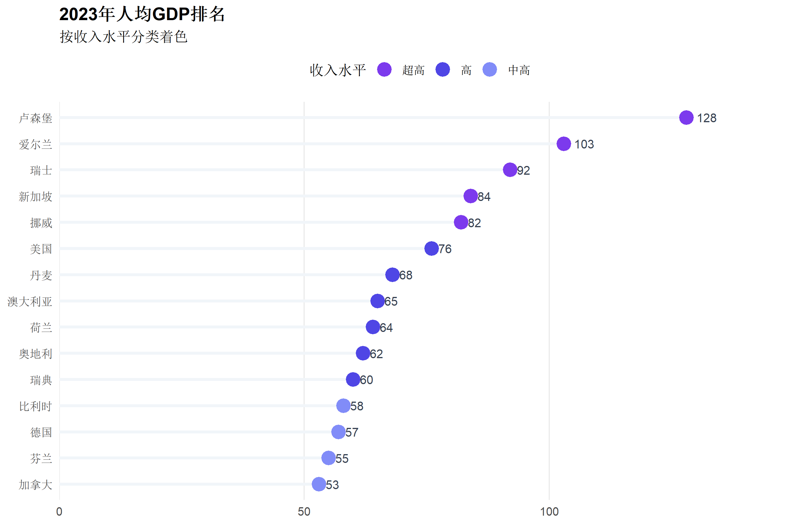
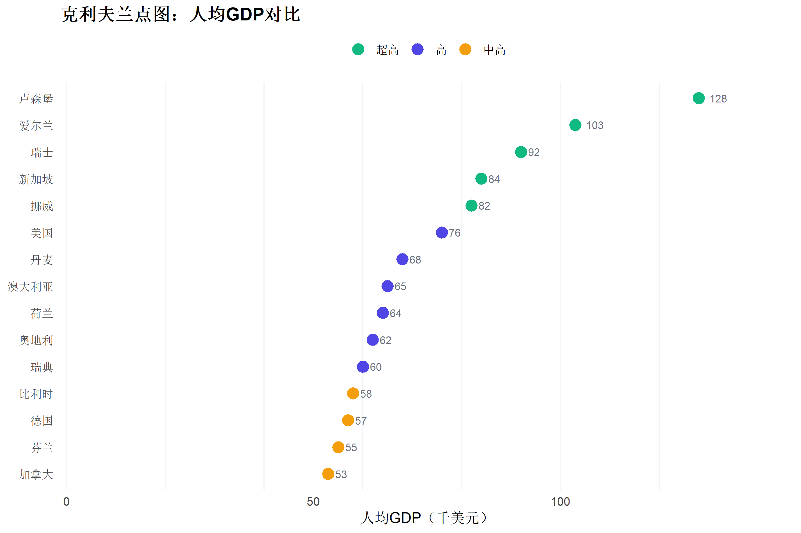
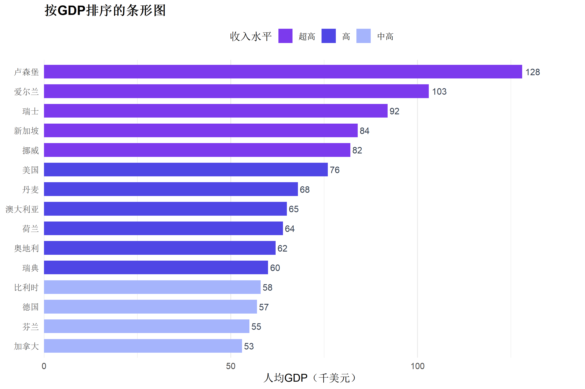
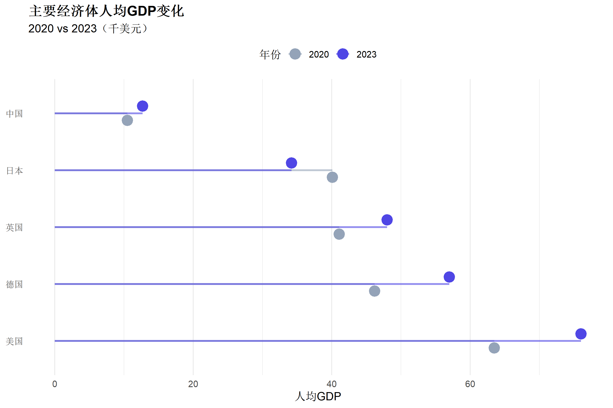
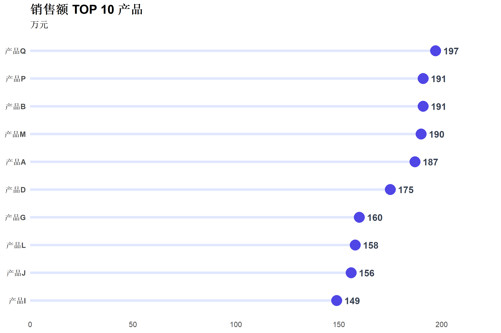
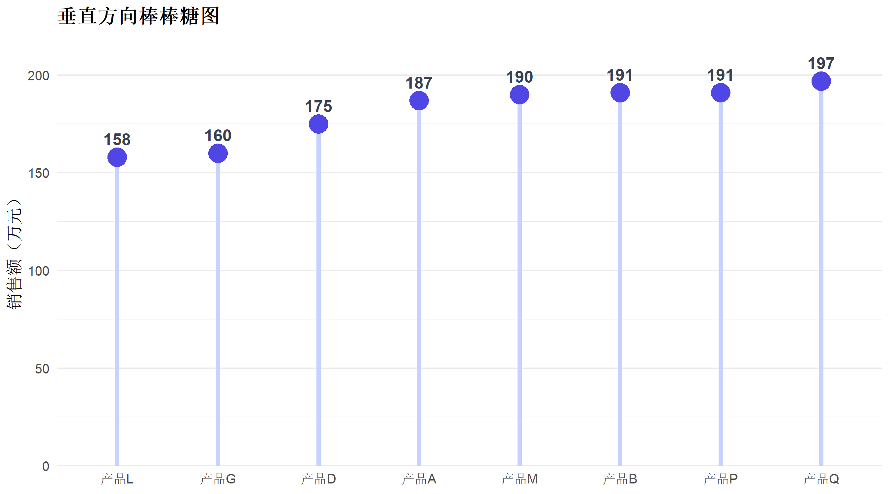
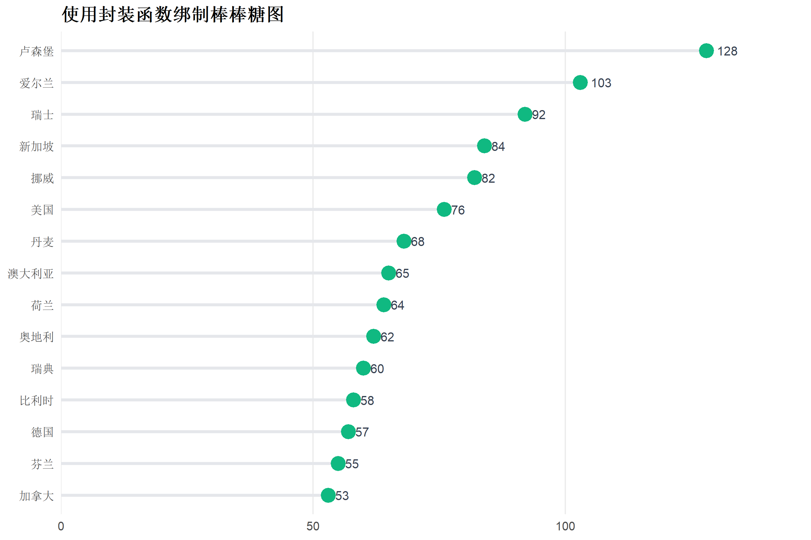

# 加载核心包
library(ggplot2)
library(dplyr)
library(scales)
library(forcats)R语言棒棒糖图与排序图绘制
数据可视化
比较图
统计图表
排序图
什么是棒棒糖图
棒棒糖图（Lollipop Chart）是一种结合了条形图和散点图特点的可视化方式。它用一条细线（“棒”）连接数据点（“糖”），相比传统柱状图，视觉更轻盈，更适合展示排序数据和排名信息。
适用场景
| 场景 | 说明 |
|---|---|
| 排名展示 | 销售排行、绩效排名、TOP N 分析 |
| 有序分类比较 | 各部门业绩、各地区数据对比 |
| 突出末端数值 | 强调具体数值而非面积 |
| 减少视觉噪音 | 当分类较多时比柱状图更清爽 |
相关图表家族
| 图表类型 | 特点 |
|---|---|
| 棒棒糖图 | 点+线，轻盈美观 |
| 克利夫兰点图 | 仅用点，极简风格 |
| 有序条形图 | 按数值排序的条形图 |
| 分组棒棒糖 | 多组比较 |
R包安装与加载
对于进阶效果，可使用 ggalt 包：
# 可选安装（提供额外geom）
install.packages("ggalt")基础棒棒糖图
准备示例数据
# 创建示例数据：各国2023年人均GDP（简化版）
gdp_data <- data.frame(
country = c(
"卢森堡", "新加坡", "爱尔兰", "瑞士", "挪威",
"美国", "丹麦", "荷兰", "奥地利", "德国",
"澳大利亚", "瑞典", "比利时", "加拿大", "芬兰"
),
gdp = c(
128, 84, 103, 92, 82, 76, 68, 64, 62, 57,
65, 60, 58, 53, 55
)
)
head(gdp_data) country gdp
1 卢森堡 128
2 新加坡 84
3 爱尔兰 103
4 瑞士 92
5 挪威 82
6 美国 76绘制基础棒棒糖图
棒棒糖图的核心是 geom_segment() + geom_point() 的组合：
# 先按GDP排序
gdp_data <- gdp_data %>%
mutate(country = fct_reorder(country, gdp))
# 基础棒棒糖图
ggplot(gdp_data, aes(x = gdp, y = country)) +
# 绘制"棒"（线段）
geom_segment(
aes(x = 0, xend = gdp, y = country, yend = country),
color = "gray70",
linewidth = 0.8
) +
# 绘制"糖"（圆点）
geom_point(
size = 4,
color = "#4f46e5"
) +
labs(
title = "2023年人均GDP排名（千美元）",
x = "人均GDP（千美元）",
y = NULL
) +
theme_minimal(base_size = 12) +
theme(
panel.grid.major.y = element_blank(),
panel.grid.minor = element_blank()
)
代码解析
| 组件 | 作用 |
|---|---|
geom_segment() |
绘制从原点到数据点的线段 |
geom_point() |
绘制末端的圆点 |
fct_reorder() |
按数值重新排列因子顺序 |
panel.grid.major.y = element_blank() |
移除水平网格线使图表更清爽 |
美化棒棒糖图
添加数值标签
ggplot(gdp_data, aes(x = gdp, y = country)) +
geom_segment(
aes(x = 0, xend = gdp, y = country, yend = country),
color = "#e2e8f0",
linewidth = 1.2
) +
geom_point(
size = 5,
color = "#4f46e5"
) +
# 添加数值标签
geom_text(
aes(label = gdp),
hjust = -0.5, # 标签在点右侧
size = 3.5,
color = "#374151"
) +
# 扩展x轴留出标签空间
scale_x_continuous(expand = expansion(mult = c(0, 0.15))) +
labs(
title = "2023年人均GDP排名",
subtitle = "单位：千美元",
x = NULL,
y = NULL
) +
theme_minimal(base_size = 12) +
theme(
panel.grid.major.y = element_blank(),
panel.grid.minor = element_blank(),
plot.title = element_text(face = "bold", size = 14),
plot.subtitle = element_text(color = "gray50")
)
条件着色
根据数值大小使用不同颜色：
# 添加分组标签
gdp_data <- gdp_data %>%
mutate(
gdp_group = case_when(
gdp >= 80 ~ "超高",
gdp >= 60 ~ "高",
TRUE ~ "中高"
)
)
ggplot(gdp_data, aes(x = gdp, y = country)) +
geom_segment(
aes(x = 0, xend = gdp, y = country, yend = country),
color = "#f1f5f9",
linewidth = 1.2
) +
geom_point(
aes(color = gdp_group),
size = 5
) +
geom_text(
aes(label = gdp),
hjust = -0.5,
size = 3.5,
color = "#374151"
) +
scale_color_manual(
values = c("超高" = "#7c3aed", "高" = "#4f46e5", "中高" = "#818cf8")
) +
scale_x_continuous(expand = expansion(mult = c(0, 0.15))) +
labs(
title = "2023年人均GDP排名",
subtitle = "按收入水平分类着色",
x = NULL,
y = NULL,
color = "收入水平"
) +
theme_minimal(base_size = 12) +
theme(
panel.grid.major.y = element_blank(),
panel.grid.minor = element_blank(),
legend.position = "top",
plot.title = element_text(face = "bold")
)
克利夫兰点图 (Cleveland Dot Plot)
克利夫兰点图是棒棒糖图的极简版本，只保留点，去掉线段：
ggplot(gdp_data, aes(x = gdp, y = country)) +
# 添加竖向网格辅助阅读
geom_vline(
xintercept = seq(0, 120, by = 20),
color = "#f1f5f9",
linewidth = 0.5
) +
# 只用点
geom_point(
aes(color = gdp_group),
size = 4
) +
geom_text(
aes(label = gdp),
hjust = -0.6,
size = 3,
color = "#6b7280"
) +
scale_color_manual(
values = c("超高" = "#10b981", "高" = "#4f46e5", "中高" = "#f59e0b")
) +
scale_x_continuous(expand = expansion(mult = c(0.01, 0.15))) +
labs(
title = "克利夫兰点图：人均GDP对比",
x = "人均GDP（千美元）",
y = NULL,
color = NULL
) +
theme_minimal(base_size = 12) +
theme(
panel.grid = element_blank(),
legend.position = "top",
plot.title = element_text(face = "bold")
)
水平排序条形图
当需要更强调数值差异时，使用传统的排序条形图：
ggplot(gdp_data, aes(x = gdp, y = country, fill = gdp_group)) +
geom_col(width = 0.7) +
geom_text(
aes(label = gdp),
hjust = -0.2,
size = 3.5,
color = "#374151"
) +
scale_fill_manual(
values = c("超高" = "#7c3aed", "高" = "#4f46e5", "中高" = "#a5b4fc")
) +
scale_x_continuous(expand = expansion(mult = c(0, 0.12))) +
labs(
title = "按GDP排序的条形图",
x = "人均GDP（千美元）",
y = NULL,
fill = "收入水平"
) +
theme_minimal(base_size = 12) +
theme(
panel.grid.major.y = element_blank(),
legend.position = "top",
plot.title = element_text(face = "bold")
)
分组棒棒糖图
比较多个类别的数据：
# 创建分组数据
compare_data <- data.frame(
country = rep(c("中国", "美国", "日本", "德国", "英国"), each = 2),
year = rep(c("2020", "2023"), 5),
value = c(10.5, 12.7, 63.5, 76.0, 40.1, 34.2, 46.2, 57.0, 41.1, 48.0)
)
compare_data <- compare_data %>%
mutate(country = fct_reorder(country, value, .fun = max, .desc = TRUE))
ggplot(compare_data, aes(x = value, y = country, color = year)) +
geom_segment(
aes(x = 0, xend = value, y = country, yend = country),
linewidth = 1,
alpha = 0.6
) +
geom_point(
size = 5,
position = position_dodge(width = 0.5)
) +
scale_color_manual(values = c("2020" = "#94a3b8", "2023" = "#4f46e5")) +
labs(
title = "主要经济体人均GDP变化",
subtitle = "2020 vs 2023（千美元）",
x = "人均GDP",
y = NULL,
color = "年份"
) +
theme_minimal(base_size = 12) +
theme(
panel.grid.major.y = element_blank(),
legend.position = "top",
plot.title = element_text(face = "bold")
)
TOP N 筛选展示
当数据量较大时，只展示排名靠前的项目：
# 创建较大数据集
set.seed(42)
large_data <- data.frame(
item = paste0("产品", LETTERS[1:20]),
sales = round(runif(20, 50, 200), 0)
)
# 只展示 TOP 10
top_10 <- large_data %>%
slice_max(sales, n = 10) %>%
mutate(item = fct_reorder(item, sales))
ggplot(top_10, aes(x = sales, y = item)) +
geom_segment(
aes(x = 0, xend = sales, y = item, yend = item),
color = "#e0e7ff",
linewidth = 1.5
) +
geom_point(
size = 6,
color = "#4f46e5"
) +
geom_text(
aes(label = sales),
hjust = -0.5,
fontface = "bold",
color = "#374151"
) +
scale_x_continuous(expand = expansion(mult = c(0, 0.15))) +
labs(
title = "销售额 TOP 10 产品",
subtitle = "万元",
x = NULL,
y = NULL
) +
theme_minimal(base_size = 12) +
theme(
panel.grid = element_blank(),
plot.title = element_text(face = "bold", size = 16),
axis.text.y = element_text(face = "bold")
)
水平/垂直方向切换
棒棒糖图可以是水平或垂直方向，根据需要选择：
垂直棒棒糖图
# 使用TOP 8数据
top_8 <- large_data %>%
slice_max(sales, n = 8) %>%
mutate(item = fct_reorder(item, sales))
ggplot(top_8, aes(x = item, y = sales)) +
geom_segment(
aes(x = item, xend = item, y = 0, yend = sales),
color = "#c7d2fe",
linewidth = 1.5
) +
geom_point(
size = 6,
color = "#4f46e5"
) +
geom_text(
aes(label = sales),
vjust = -1,
fontface = "bold",
color = "#374151"
) +
scale_y_continuous(expand = expansion(mult = c(0, 0.12))) +
labs(
title = "垂直方向棒棒糖图",
x = NULL,
y = "销售额（万元）"
) +
theme_minimal(base_size = 12) +
theme(
panel.grid.major.x = element_blank(),
plot.title = element_text(face = "bold")
)
实用函数封装
创建一个快速绘制棒棒糖图的函数：
#' 快速绘制棒棒糖图
#' @param data 数据框
#' @param x 数值变量名（字符串）
#' @param y 分类变量名（字符串）
#' @param color 点的颜色
#' @param show_value 是否显示数值标签
#' @param title 图表标题
plot_lollipop <- function(data, x, y,
color = "#4f46e5",
show_value = TRUE,
title = NULL) {
# 按数值排序
data <- data %>%
mutate(!!sym(y) := fct_reorder(!!sym(y), !!sym(x)))
p <- ggplot(data, aes(x = .data[[x]], y = .data[[y]])) +
geom_segment(
aes(
x = 0, xend = .data[[x]],
y = .data[[y]], yend = .data[[y]]
),
color = "#e5e7eb",
linewidth = 1.2
) +
geom_point(size = 5, color = color)
if (show_value) {
p <- p + geom_text(
aes(label = round(.data[[x]], 1)),
hjust = -0.5,
size = 3.5,
color = "#374151"
) +
scale_x_continuous(expand = expansion(mult = c(0, 0.15)))
}
p + labs(title = title, x = NULL, y = NULL) +
theme_minimal(base_size = 12) +
theme(
panel.grid.major.y = element_blank(),
panel.grid.minor = element_blank(),
plot.title = element_text(face = "bold")
)
}
# 使用示例
plot_lollipop(gdp_data, "gdp", "country",
color = "#10b981",
title = "使用封装函数绘制棒棒糖图"
)
总结
| 图表类型 | 适用场景 | 核心代码 |
|---|---|---|
| 棒棒糖图 | 排名展示、有序比较 | geom_segment() + geom_point() |
| 克利夫兰点图 | 极简风格、减少视觉噪音 | 仅 geom_point() |
| 排序条形图 | 强调数值差异面积 | geom_col() + fct_reorder() |
| 分组棒棒糖 | 多组时间点对比 | 添加 color 映射 |
设计建议
- 保持排序：始终按数值排序使图表更易读
- 控制数量：超过15个分类时考虑只展示 TOP N
- 简化网格：移除 y 轴网格线使图表更清爽
- 添加数值：在点旁添加具体数值提升可读性
- 区分颜色：使用颜色编码区分相关重要类别